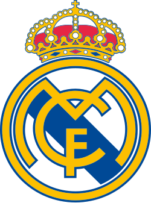

Real Madrid
Le club madrilène et son histoire riche en titres européens.
Découvrir le Real Madrid
Bienvenue sur ce site consacré à cinq équipes emblématiques du football européen. Retrouvez pour chacune une présentation, des joueurs légendaires, quelques trophées, un chant et un lien vidéo.
Choisissez un club pour découvrir son histoire et son stade.
Le club madrilène et son histoire riche en titres européens.
Découvrir le Real Madrid
Le Barça, club catalan reconnu pour son identité et son jeu.
Découvrir le FC Barcelone
Le grand club de Munich, référence du football allemand.
Découvrir le Bayern Munich
Un club historique d’Angleterre, porté par ses supporters.
Découvrir Liverpool FC
Le club de Manchester au maillot bleu ciel.
Découvrir Manchester City
Un formulaire est disponible pour noter le site et laisser un commentaire.
Accéder au formulaire